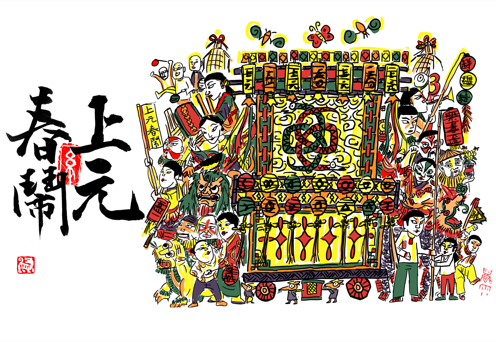
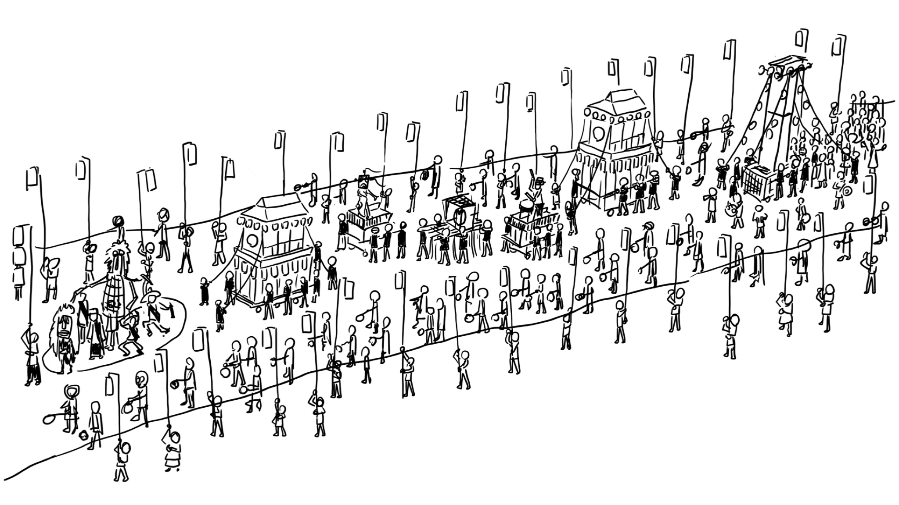
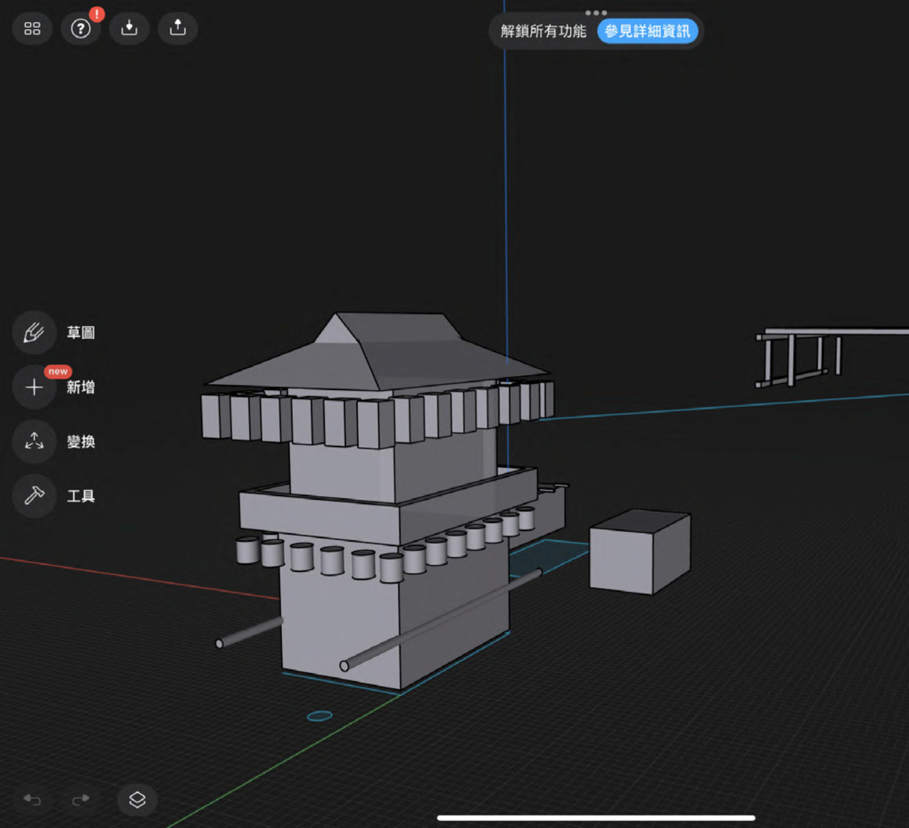
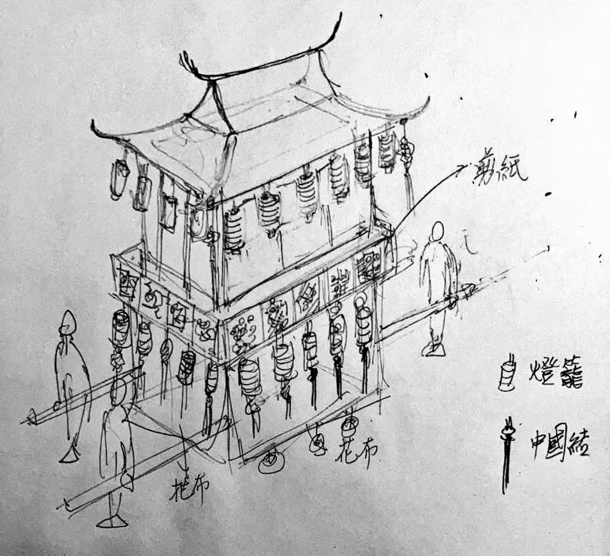
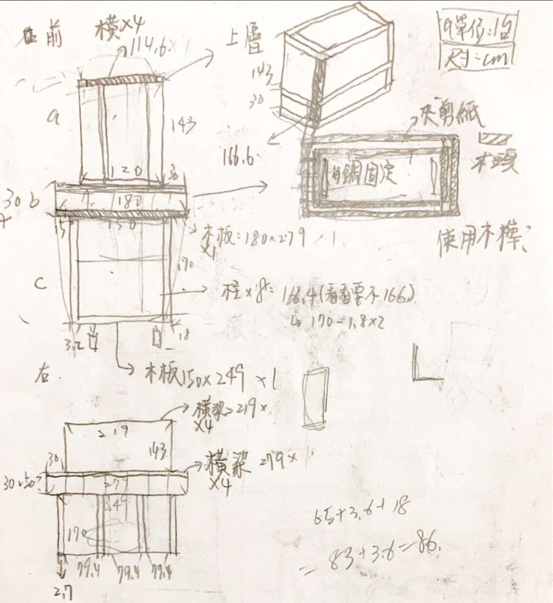
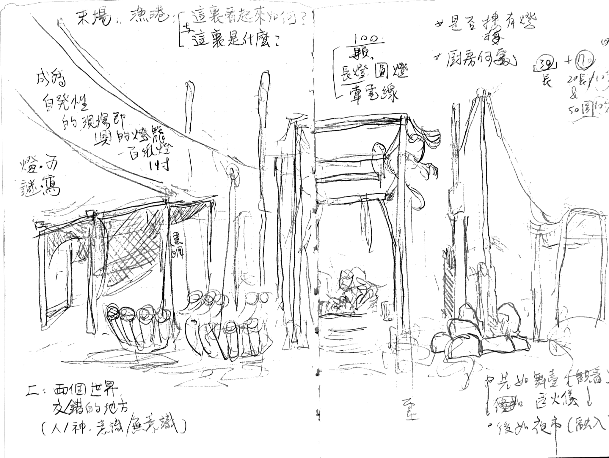
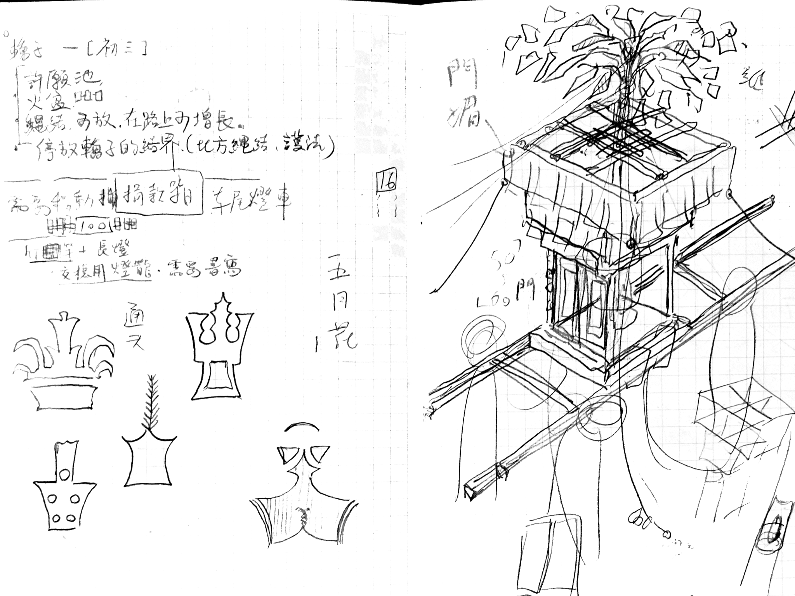
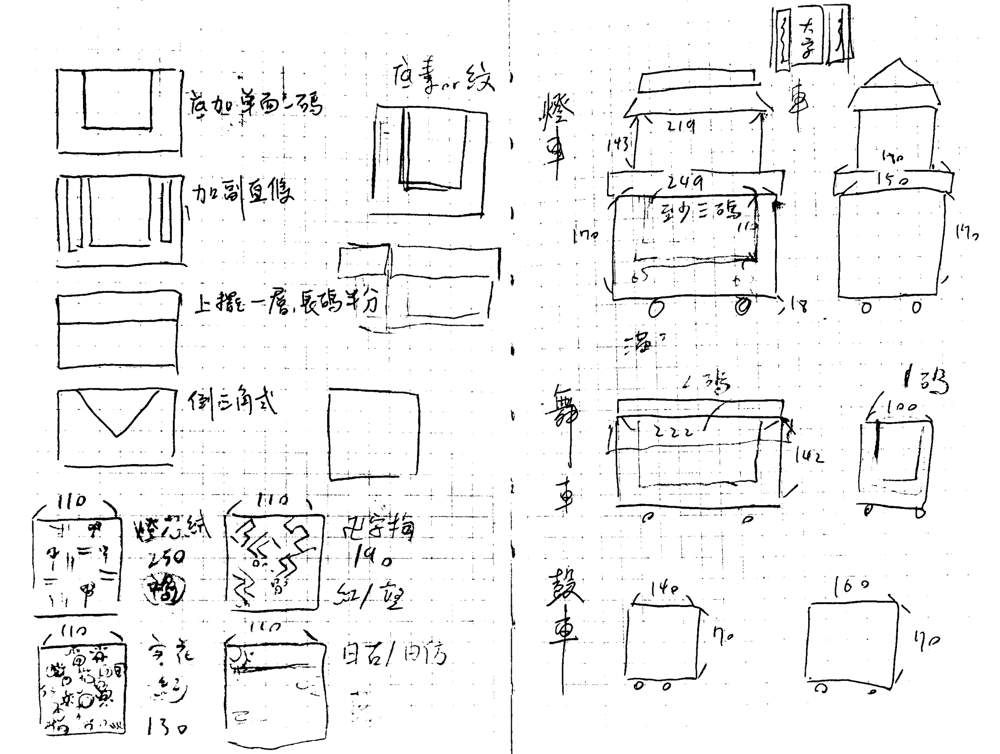
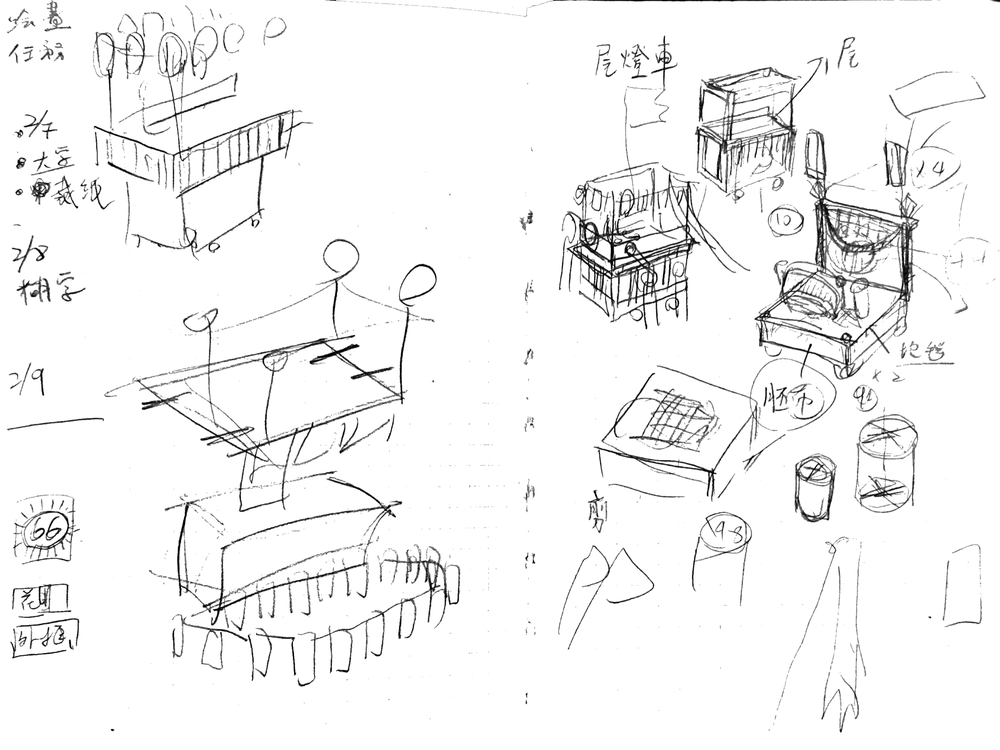
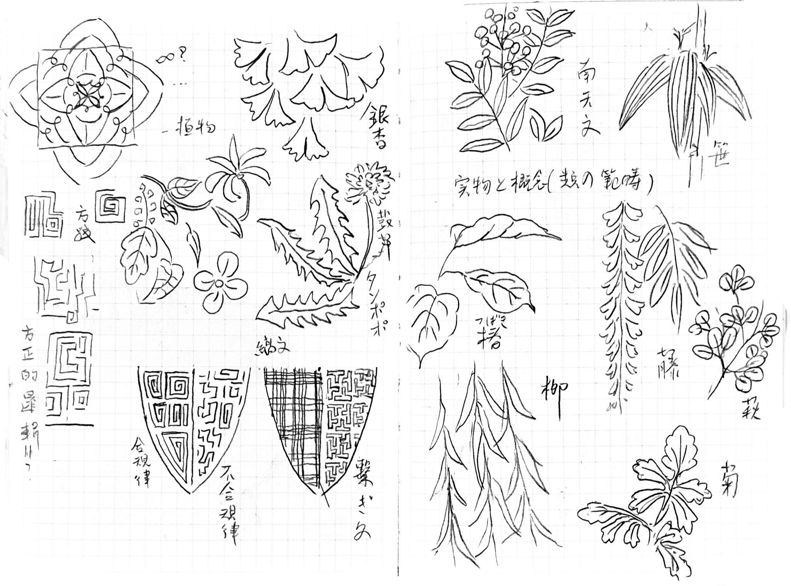

OVERVIEW
活動概覽

2022壬寅上元，由莊逸軒發起，高雄「蟬雨越讀」獨立書店、莊奕凡與陳塵共同主辦。
籌備期2021年11月 ─ 2022年2月12日
活動時間2022年2月12日
活動路線
蟬雨越讀→彩虹公園→泰順街→和平一路→五福一路→廣州一街・九記食糖水→光華一路→廈門街→福建街→五福一路・藍色狂想→五福三路中央公園→歷史博物館・大公路天橋拔河→瀨南街・Booking→五福四路・參捌→七賢三路・銀座→七賢三路・棧貳庫（看狀況）→鼓山路→臨海路→西子灣觀景台→雄鎮北門→柴山大路→山海宮→柴山漁港
成果正日踩街約200人參與，但因為鑽木取火花費太多時間，最後只走五福四路，拜訪店家僅剩藍色狂想及銀座，天橋上的拔河亦取消。隊伍在走到銀座以後超過法定遊行時間，在協議後以「解除遊行，各自散步」為名義，集體散步前往西子灣及柴山。
THEME
年度主題・糸
糸部的記憶遙遠，人們以指尖揉出細長的絲線，編織七彩的衣裳，刺繡繁複的紋樣，精練粗壯的繩索，也作為一種象徵，願望守護摯愛，祝福合作團圓，祈禱結緣不斷。
解與結的意象彷彿城市的圖騰，在雜沓的千萬種關係裏，交纏與分離，時而織成美妙的錦繡，時而糾為難解的情結，糸便成為了一切關係的最小單位，勾勒出籠蓋城市的界域，我們穿梭其中，寫下物語，折磨與歡喜。
億萬縷的「糸」浮游在城市的角落，聚合結繩，或紓為流蘇，如果一年有一次的祝福，那麼，就祝福人們可以甘願相濡以沫，或者合意相忘江湖。直到有一天聚為最原始龍的圖騰，即使億萬種相異的元素集結一身，也能自在地飛舞通天。
PROGRAM
活動流程
↓ 向下捲動以繪製路線
TEAM
策劃團隊
執行統籌
莊奕凡
統籌組
藝術統籌
莊逸軒
裝置組
表演統籌
陳塵
演出組
統籌組
組織
路線
落實
莊奕凡
場控組
奕凡
文婷
爬山
Eyes
RIRI
小跳
勝隆
後勤組
照顧
恢復
保護
蔡采霖
阿樂
公關組
柯伯麟
吳堤
郭君
A子
紀錄組
看見
完整
創造
黃柏淯
裝置組
主燈－美
火陣－心願
芳名燈－感謝
逸軒
Zepher
育誼
廷威
小8
朝露
子玄
雲
塔塔
樂夷
阿蘇
雪怪
阿群
阿松
Nora
演出組
陳塵
頭陣
打開
君君
火陣
接通
陳塵
周昱旻
任明信
尾陣
流動
22
陽歌隊
芷妘
李嘉艾
劉崇鳳
許漪
施姸伶
楊凱登
施涵文
趙若荷
姚瑢棻
六雨
駱玟錡
陳小跳
奎鋒
蘇信維
郭孟昕
葉俐蘭
童謹利
開場
姚喻文
陳塵
黃裕庭
樂手
單哲
黃懷槿
服妝組
預備
異質
一致
簡宇
祈福演出組
鼓動隊伍帶領節奏
為店家獻上祈福儀式
製作花燈組
彩繪花紋／木工竹編
讓4.5公尺高的燈車現身港城
扛轎推燈者
徵求勇者壯漢
扛起火轎、推動花燈車前行

繫燈陪伴者
一同全程走訪的夥伴
提起燈籠與街坊互動
參與尾陣
邀請所有路過民眾
當日隨時加入祭典
ARTWORK
創作內容











DISCOURSE
創作論述
← 點選左側文章標題
TIMELINE